Թեստ 57
30:00
1. Քանի՞ երթևեկելի մասեր ունի այս ճանապարհը

2. Քանի՞ երթևեկության գոտիի կա այս երթևեկելի մասում

3. 5 տոննայից ավելի թույլատրելի առավելագույն զանգված ունեցող ավտոբուսների շահագործումն արգելվում է, եթե՝
4. Տրանսպորտային միջոցների շահագործումն արգելվում է, եթե`
5. Եթե մտադիր եք խաչմերուկում կատարել ձախ շրջադարձ, ո՞ր տրանսպորտային միջոցին պետք է զիջեք ճանապարհը:
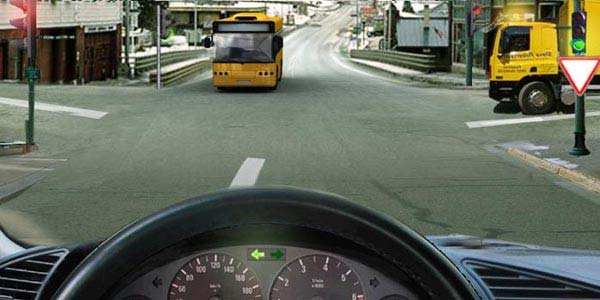
6. Ինչպե՞ս պետք է վարվի վարորդը տվյալ իրադրությունում:
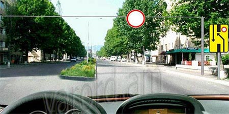
7. Ո՞ր տրանսպորտային միջոցի վարորդը պետք է զիջի ճանապարհը:
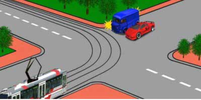
8. Ո՞ր պատասխանում են ճիշտ նշված այն տրանսպորտային միջոցները, որոնց երթևեկությունը թույլատրվում է:
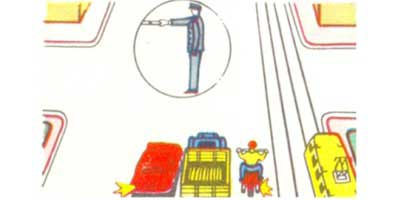
9. Ինչպե՞ս կվարվեք, եթե անհրաժեշտ է շարժման ուղղությունը փոխել հակառակի
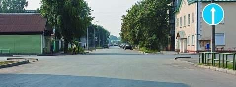
10. Այս նշանը նախապես տեղեկացնում է
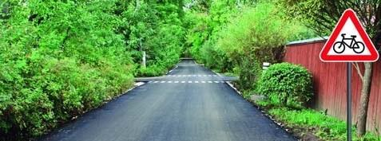
11. Խաչմերուկն ուղիղ անցնելիս անհրաժեշտ է ճանապարհը զիջել
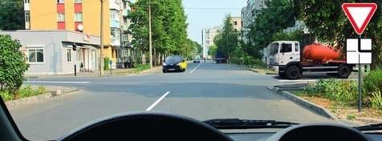
12. Թույլատրվում է արդյոք ավտոմոբիլի կանգառն այս վայրում:
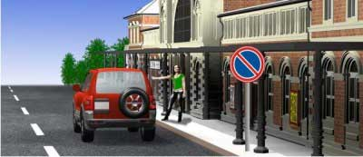
13. Թույլատրվու՞մ է արդյոք մարդկանց փոխադրումը բեռնատար կցորդում:
14. Վազանցն արգելվում է`
15. Երթևեկությունը թույլատրված է
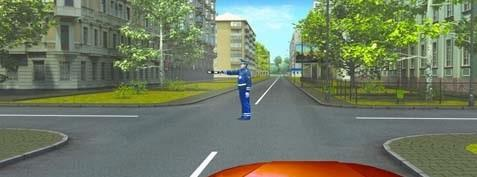
16. Այս գծանշումը
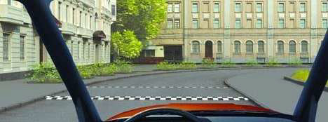
17. Զիջել ճանապարհը պարտավոր ենք
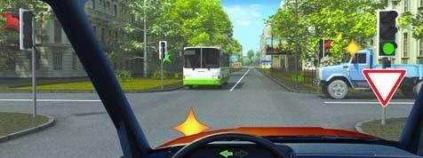
18. Տվյալ իրավիճակում թույլատրվու՞մ է վազանց կատարել:
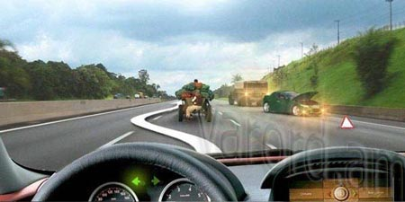
19. Այս գոտուց երթևեկությունը շարունակել թույլատրվում է
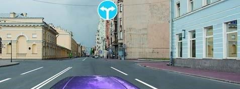